CH3(CH2)2CH(CH3)CH2CH3
When viewing a condensed formula of this kind, one must recognize that parentheses are used both to identify repeating units, such as the two methylene groups on the left side, and substituents, such as the methyl group on the right side. This formula is elaborated and named as follows:
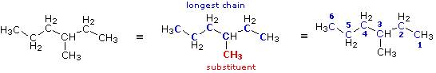
The condensed formula is expanded on the left. By inspection, the longest chain is seen to consist of six carbons, so the root name of this compound will be hexane. A single methyl substituent (colored red) is present, so this compound is a methylhexane. The location of the methyl group must be specified, since there are two possible isomers of this kind. Note that if the methyl group were located at the end of the chain, the longest chain would have seven carbons and the root name would be heptane not hexane. To locate the substituent the hexane chain must be numbered consecutively, starting from the end nearest a substituent. In this case it is the right end of the chain, and the methyl group is located on carbon #3. The IUPAC name is thus: 3-methylhexane
(CH3)2C(C2H5)2
Again, the condensed formula is expanded on the left, the longest chain is identified (five carbons) and substituents are located and named. Because of the symmetrical substitution pattern, it does not matter at which end of the chain the numbering begins.
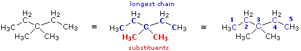
When two or more identical substituents are present in a molecule, a numerical prefix (di, tri, tetra etc.) is used to designate their number. However, each substituent must be given an identifying location number. Thus, the above compound is correctly named: 3,3-dimethylpentane. Note that the isomer (CH3)2CHCH2CH(CH3)2 would be named 2,4-dimethylpentane.
(CH3)2CHCH2CH(C2H5)C(CH3)3
This example illustrates some sub-rules of the IUPAC system that must be used in complex cases. The expanded and line formulas are shown below.
1. If there are two or more longest chains of equal length, the one having the largest number of substituents is chosen. 2. If both ends of the root chain have equidistant substituents: (i) begin numbering at the end nearest a third substituent, if one is present. (ii) begin numbering at the end nearest the first cited group (alphabetical order).
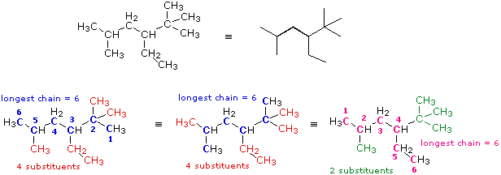
In this case several six-carbon chains can be identified. Some (colored blue) are identical in that they have the same number, kind and location of substituents. The IUPAC name derived from these chains will not change. Some (colored magenta) differ in the number, kind and location of substituents, and will result in a different name. From rule 1 above the blue chain is chosen, and it will be numbered from the right hand end by application of rule (i). Remembering the alphabetical priority, we assign the following IUPAC name: 3-ethyl-2,2,5-trimethylhexane.
The following are additional examples of more complex structures and their names.
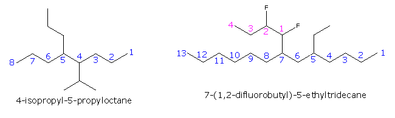
The formula on the right shows how a complex substituent may be given a supplementary numbering. In such cases the full substituent name is displayed within parenthesis and is alphabetized including numerical prefixes such as 'di'.
Write a structural formula for the compound 3,4-dichloro-4-ethyl-5-methylheptane. First, we draw a chain of seven carbon atoms to represent the root name "heptane". This chain can be numbered from either end, since no substituents are yet attached. From the IUPAC name we know there are two chlorine, one ethyl and one methyl substituents. The numbers tell us where the substituents are located on the chain, so they can be attached, as shown in the middle structure below. Finally, hydrogen atoms are introduced to satisfy the tetravalency of carbon. The structural formula on the right can then be written in condensed form as: CH3CH2CHClCCl(C2H5)CH(CH3)CH2CH3 or C2H5CHClCCl(C2H5)CH(CH3)C2H5
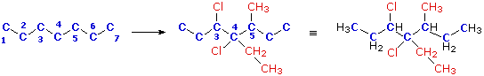
In naming this compound it should be noted that the seven carbon chain is numbered from the end nearest the chlorine by applying rule (ii) above.
This page is the property of The Edvibe Team. Comments, questions and errors should be sent to contact@edvibe.co.ke. These pages are provided to the IOCD to assist in capacity building in chemical education. 05/05/2013
The following two cases provide examples of monosubstituted cycloalkanes.
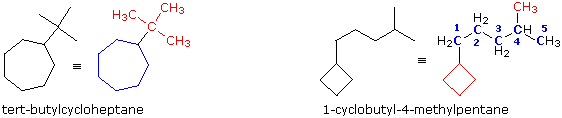
In the first case, on the left, we see a seven-carbon ring bearing a C4H9 substituent group. Earlier this substituent was identified as the tert-butyl group, so a name based on the cycloheptane root is easily written. In the second case, on the right, a four-carbon ring is attached to a branched six-carbon alkyl group. This C6H13 group could be named "isohexyl", but a better approach is to name this compound as a disubstituted pentane. The four-membered ring substituent is called a cyclobutyl group.
More highly substituted cycloalkanes are named in a similar fashion, but care must be taken in numbering the ring.
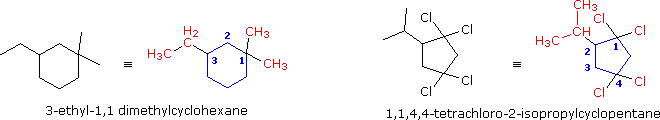
In the example on the left, there are three substituents on the six-membered ring and two are on the same carbon. The disubstituted carbon becomes #1 because the total locator numbers are thereby kept to a minimum. The ethyl substituent is then located on carbon #3 (counter-clockwise numbering), not #5 (clockwise numbering). Alphabetical listing of the substituents then leads to the name "3-ethyl-1,1-dimethylcyclohexane", being careful to assign a locator number to each substituent. Note that if only one methyl substituent was present, the alphabetical citation rule would assign the ethyl group to carbon #1 and the methyl to #3. The second example, on the left, has five substituents, and the numbering is assigned so that the first, second and third arbitrarily chosen substituents have the lowest possible numbers (1,1 & 2 in this case).
Illustration 1 (CH3)2C=CHCH2C(CH3)3
Illustration 2 (CH3CH2CH2)2C=CH2
Expanding these formulas we have:
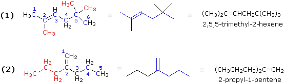
Both these compounds have double bonds, making them alkenes. In example (1) the longest chain consists of six carbons, so the root name of this compound will be hexene. Three methyl substituents (colored red) are present. Numbering the six-carbon chain begins at the end nearest the double bond (the left end), so the methyl groups are located on carbons 2 & 5. The IUPAC name is therefore: 2,5,5-trimethyl-2-hexene. In example (2) the longest chain incorporating both carbon atoms of the double bond has a length of five. There is a seven-carbon chain, but it contains only one of the double bond carbon atoms. Consequently, the root name of this compound will be pentene. There is a propyl substituent on the inside double bond carbon atom (#2), so the IUPAC name is: 2-propyl-1-pentene.
Illustration 3 (C2H5)2C=CHCH(CH3)2
Illustration 4 CH2=C(CH3)CH(CH3)C(C2H5)=CH2
The next two examples illustrate additional features of chain numbering. As customary, the root chain is colored blue and substituents are red.
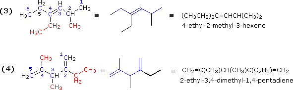
The double bond in example (3) is located in the center of a six-carbon chain. The double bond would therefore have a locator number of 3 regardless of the end chosen to begin numbering. The right hand end is selected because it gives the lowest first-substituent number (2 for the methyl as compared with 3 for the ethyl if numbering were started from the left). The IUPAC name is assigned as shown. Example (4) is a diene (two double bonds). Both double bonds must be contained in the longest chain, which is therefore five- rather than six-carbons in length. The second and fourth carbons of this 1,4-pentadiene are both substituted, so the numbering begins at the end nearest the alphabetically first-cited substituent (the ethyl group).
Illustrations 5, 6, 7 & 8
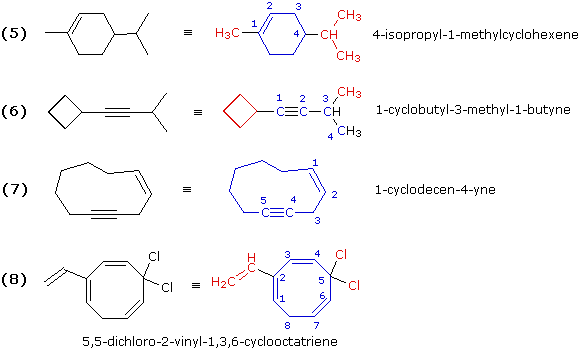
These examples include rings of carbon atoms as well as some carbon-carbon triple bonds. Example (6) is best named as an alkyne bearing a cyclobutyl substituent. Example (7) is simply a ten-membered ring containing both a double and a triple bond. The double bond is cited first in the IUPAC name, so numbering begins with those two carbons in the direction that gives the triple bond carbons the lowest locator numbers. Because of the linear geometry of a triple bond, a-ten membered ring is the smallest ring in which this functional group is easily accommodated. Example (8) is a cyclooctatriene (three double bonds in an eight-membered ring). The numbering must begin with one of the end carbons of the conjugated diene moiety (adjacent double bonds), because in this way the double bond carbon atoms are assigned the smallest possible locator numbers (1, 2, 3, 4, 6 & 7). Of the two ways in which this can be done, we choose the one that gives the vinyl substituent the lower number.
The last three examples, (9), (10) & (11), illustrate some fine points of the nomenclature rules.
The root chain is that which contains the maximum number of multiple bonds. • If more than one such chain is found, the longest is chosen as the root. • If the chains have equal length the one with the most double bonds is chosen.
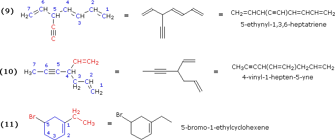
The first two acyclic cases are branched chains containing several multiple bonds. Example (9) has two possible seven-carbon chains, each having three multiple bonds. The one selected has three double bonds and the triple bond becomes a substituent group. In example (10) we find a six-carbon chain containing two double bonds, and a seven-carbon chain with a double and a triple bond. The latter becomes the root chain and the second double bond is a vinyl substituent on that chain. The last example (11) shows that in numbering a cycloalkene one must first consider substituents on the double bond in assigning sites #1 and #2. Here the double bond carbon atom to which the ethyl group is attached becomes #1 and the other carbon of the double bond is necessarily carbon #2. Sometimes this results in other substituents having high locator numbers, as does bromine in this case.
When one substituent and one hydrogen atom are attached at each of more than two positions of a monocycle, the steric relations of the substituents may be expressed by first identifying a reference substituent (labeled r) followed by a hyphen and the substituent locator number and name. The relative configuration of other substituents are then reported as cis (c) or trans (t) to the reference substituent.
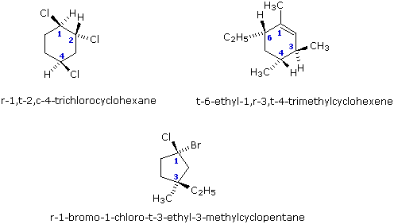
When two different substituents are attached at the same position of a monocycle, then the lowest-numbered substituent named as a suffix is selected as reference group. If none of the substituents is named as a suffix, then that substituent of the pair of substituents having the lowest number, and which is preferred by the sequence rule, is chosen as the reference group. The relationship of the sequence-rule-preferred substituent at geminally substituted positions, relative to the reference group, is cited as c- or t-, as appropriate.
An alternative system which specifies the absolute configuration of substituted carbon atoms may also be used. This system, known as the Cahn-Ingold-Prelog rules, uses and elaborates the priority rules developed earlier.
The previous discussion has focused on the carbon framework that characterizes organic compounds, and has provided a set of nomenclature rules that, with some modification, apply to all such compounds. An introduction to functional group nomenclature was limited to carbon-carbon double and triple bonds, as well as simple halogen groups. There are, however, many other functional groups that are covered by the IUPAC nomenclature system. A summary of some of these groups and the characteristic nomenclature terms for each is presented in the following table. Specific examples of their nomenclature will be provided as the chemistry of each group is discussed.
Note that only one functional group suffix, other than "ene" and "yne", may be used in a given name. The following table gives the priority order of suffix carrying groups in arriving at a IUPAC name. When a compound contains more than one kind of group in this list, the principal characteristic group is the one nearest the top. All other groups are then cited as prefixes.